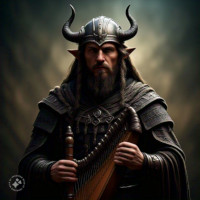
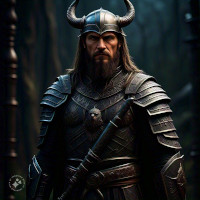

Skiald começa o livro contando sobre como será a história que ele contará, sobre Thory, que é Azrael, e Syfhyr. Ele vai relatar sobre como Thory e Syfhyr se conheceram e como Thory, um demônio por nome Azrael, se apaixonou por ela e a defendeu de Gunnar, um Earl das terras do Gelo Branco.
O capítulo irá mostrar a chegada de Azrael como um espirito vagante na Vila entre montanhas. Ele encontrará Thory, um homem trabalhador ao qual ele encontra em uma pescaria em que Thory estava e o possui, voltando para casa e para Syfhyr
